11 Structural Equation Modelling
When we have finished this chapter, we should be able to:
In the second half of the 1960s, a significant development emerged from the collaboration of researchers working on Factor Analysis (and the concept of latent variables) and Path Analysis (which introduced the concepts of exogenous/endogenous variables and direct/indirect effects). This integration gave rise to Path Analysis with latent variables—now known as Structural Equation Modeling (SEM).
11.1 Measurement and Structural Models
The general SEM model can be decomposed into two two submodels: a measurement model, and a structural model (Figure 11.1).
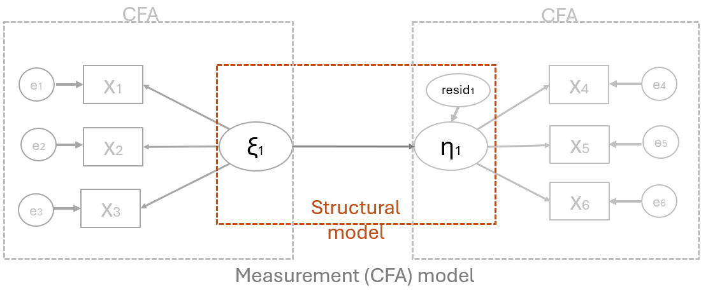
The measurement model
The measurement model defines associations between the observed and unobserved variables. In other words, it provides the link between scores on a measuring instrument (observed indicator variables, \(x_1,...,x_6\)) and the underlying structures they are designed to measure (unobserved latent variables \(\xi_1\), \(\eta_1\)). The measurement model, then, represents the CFA model described earlier in Chapter 10 in that it specifies the pattern by which each measure loads on a particular factor.
The structural model
The structural model defines associations among the unobserved variables (latent variables, \(\xi_1\) and \(\eta_1\)). Accordingly, it specifies the manner by which particular latent variables directly or indirectly influence changes in the values of certain other latent variables in the model. In Figure 11.1 the latent variable \(\xi_1\) is exogenous, while the latent variable \(\eta_1\) is endogenous.
11.2 Effects in SEM
In SEM two types of effects are estimates: direct and indirect effects (Figure 11.2).
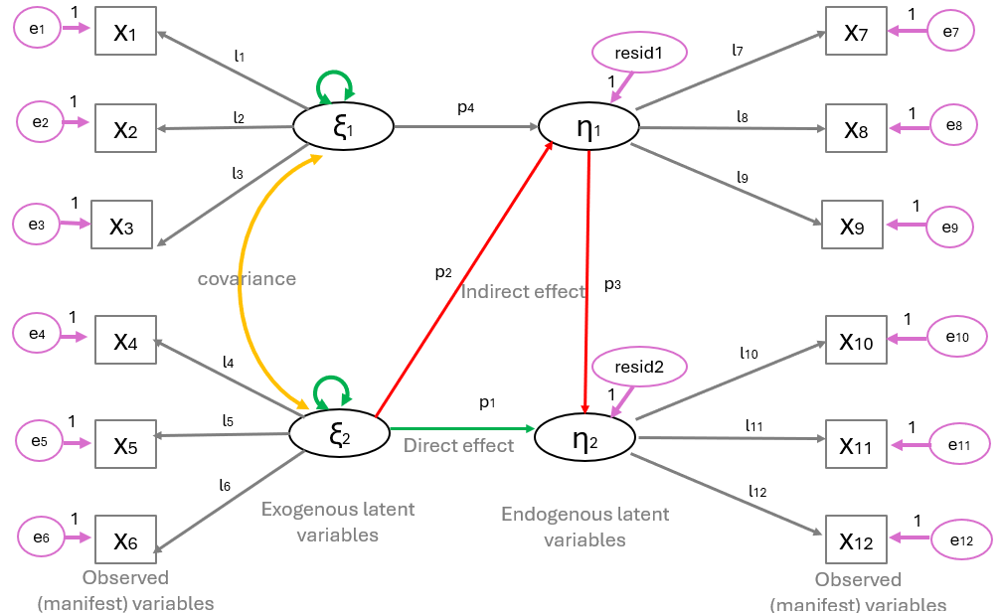
Direct effects (p1), indicated by a straight arrow, represent the association between one latent variable to another and this is indicated using single-directional arrows (e.g., the green arrow that connects directly \(\xi_2\) and \(\eta_2\)). The arrows are used in SEM to indicate directionality and do not imply causality.
Indirect effects (\(p2*p3\)), on the other hand, reflect the association between an independent latent variable (exogenous variable) (e.g. \(\xi_2\)) and a dependent latent variable (endogenous variable) (e.g. \(\eta_2\)) that is mediated by one or more latent variables (e.g. \(\eta_1\)). This path is illustrated by the red arrows in Figure 11.2.
11.3 Parameters in the SEM
There are three types of parameters to be specified:
Directional effects: These are regression coefficients (e.g., \(l_1-l_12\) in Figure 11.2) that represent the associations between observed indicators and latent variables (referred to as factor loadings), as well as the associations between latent variables and other latent variables (referred to as path coefficients; e.g., \(p_1-p_4\) in Figure 11.2).
Variances: Variances in a structural equation model account for unexplained variability in both observed and latent variables. For observed indicators, they represent measurement error—the variance not accounted for by the latent factor the indicator is intended to measure (e.g., \(e_1-e_{12}\) in Figure 11.2). For exogenous latent variables, they are represented with the green double-headed arrows in Figure 11.2 (these are often fixed to 1 for scaling but can sometimes be estimated). For endogenous latent variables, they reflect the variance in an endogenous (dependent) latent variable that is not explained by the exogenous (independent) latent variables predicting it in the model (e.g., \(resid_1, resid_2\) in Figure 11.2).
Covariances: These parameters represent non-directional associations among independent (exogenous) latent variables and these exist when a researcher hypothesizes that the factors are correlated (\(\phi_1\) shown as the curved double-headed orange arrow connected (\(\xi_1\) and \(\xi_2\) in Figure 11.2).
11.4 Steps in Structural Equation Modeling (SEM)
The main steps of SEM are following (Figure 11.2) (Stoffels et al. 2023):
Model specification: Define the hypothesized associations between variables based on theory. Establish a satisfactory measurement model for key concepts using latent variables. Fit regression paths between concepts (structural model).
Model identification: Model identification refers to determining whether there is sufficient information in the observed data to estimate the model’s parameters uniquely. A model is overidentified when there are more known data points (usually variances and covariances) than free parameters—this is ideal because it allows for both parameter estimation and model fit testing. A just-identified model has an equal number of knowns and free parameters; while it can be estimated, its fit to the data cannot be tested. An underidentified model has fewer knowns than parameters, meaning it lacks enough information to estimate all parameters, making it impossible to fit the model reliably.
Model estimation: It refers to the process of using statistical techniques to calculate the values of model parameters, such as factor loadings, path coefficients, and error or residual variances. Common estimation methods include Maximum Likelihood (ML), Generalized Least Squares (GLS), and Bayesian estimation, with ML being the most widely used.
Assess goodness of fit: Assessing goodness of fit in SEM involves evaluating how well the proposed model reproduces the observed data. Key measures include the Chi-square test, and approximate fit indices like the Root Mean Square Error of Approximation (RMSEA), Comparative Fit Index (CFI), and Tucker-Lewis Index (TLI).
Model respecification: Model respecification in SEM refers to the process of modifying a model to improve its fit to the data after initial estimation. If the original model does not fit well, researchers may adjust it by adding or removing paths, correlating error terms, or reassigning indicators—guided by both theory and statistical diagnostics like modification indices.
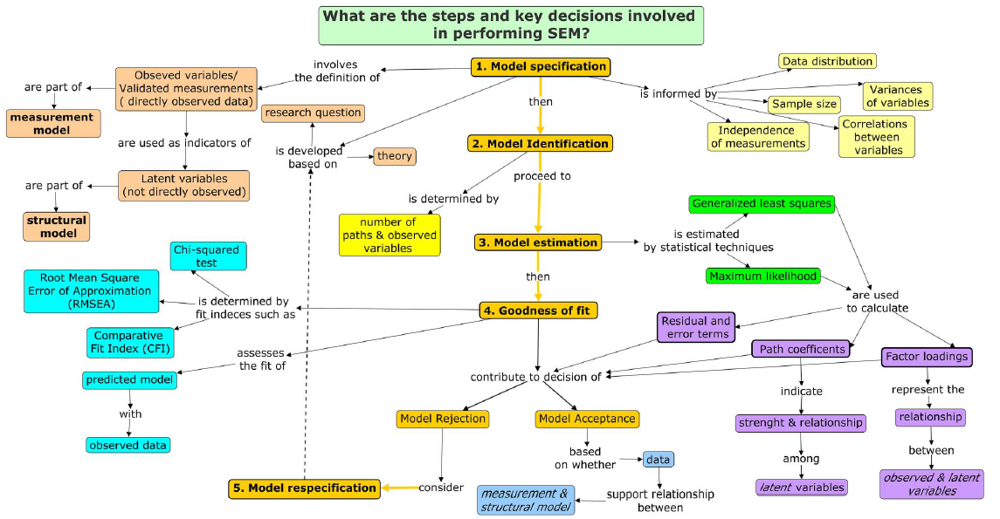
11.5 EXAMPLE Data and the model
The theoretical framework for our example is grounded in understanding how various student background factors influence academic achievement. The observed variables are: motivation (motiv), harmony (harm), stability (stabi), negative parental psychology (ppsych), socioeconomic status (ses), verbal IQ (verbal), reading (read), arithmetic (arith), and spelling (spell).
In this example, nine observed variables are clustered into hypothetical latent constructs based on prior knowledge or theory. The three hypothesized latent constructs are adjustment, risk, and achievement. Adjustment is defined by the observed variables motivation, harmony, and stability. Similarly, risk is defined by negative parental psychology, socioeconomic status, and verbal IQ. It also correlates with the Adjustment latent variable. Finally, achievement is composed of reading, arithmetic, and spelling (Figure 11.5).
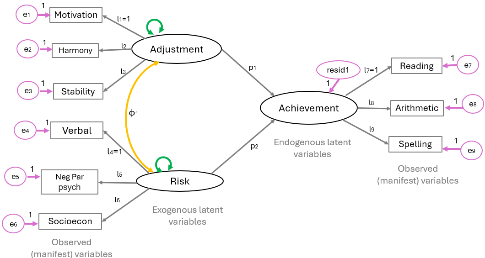
Parameters of the model in Figure 11.5:
Fixed: 9 error term regression paths (fixed to 1), 3 factor loadings (fixed to 1), 1 residual regression path (fixed to 1).
Free: 9 error variances (\(e_1,..,e_9\)), 6 factor loadings (\(l_2, l_3, l_4, l_5, l_6, l_8, l_9\)), 2 path coefficients (\(p1\) and \(p_2\)), 1 residual variance, 2 variances of the exogenous variables (green double-headed arrows), 1 covariance (orange double-headed arrow).
Therefore, we have 13 fixed parameters and 21 free parameters.
11.6 SEM in Jamovi
On the Jamovi top menu navigate to
flowchart LR A(Analyses) -.-> B(SEM) -.-> C(Structural Equation Modelling)
as shown below (Figure 11.6).
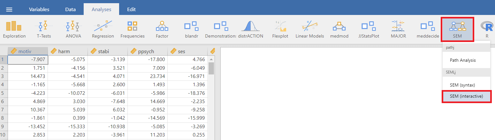
Once the Structural Equation Modeling window appears, type “Achievement” into the Latent Endogenous Variables box. Next, select the observed variables read (ref.), arith, and spell from the left-hand pane and move them under the “Achievement” label in the Latent Endogenous Variables box (Figure 11.7).
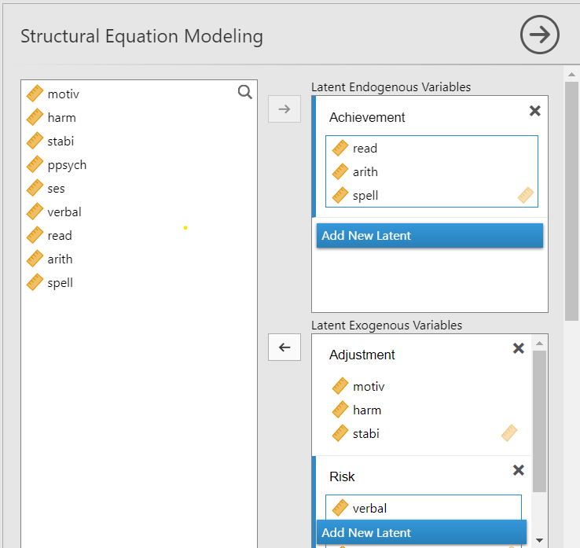
Similarly, type “Adjustment” into the Latent Exogenous Variables box. Next, select the observed variables motiv (ref.), harm, and stabi from the left-hand pane and move them under the “Adjustment” label in the Latent Exogenous Variables box (Figure 11.7).
Next, add a new exogenous variable in the Latent Exogenous Variables box and label it “Risk”. Select the verbal (ref.), ppsych, and ses observed variables and from the left-hand pane and move them under the “Risk” label in the Latent Exogenous Variables box (Figure 11.7).
We also need to define the exogenous factors “Adjustment” and “Risk” as predictors of the endogenous variable “Achievement”. To do this, select the desired variables and use the arrow button to transfer them into the Endogenous Variables field in the model as shown in Figure 11.8.
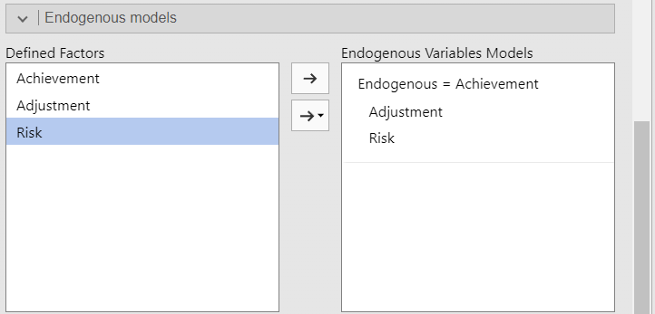
We can also present the model with a path diagram by selecting “path diagram” and “show residuals” (Figure 11.10).
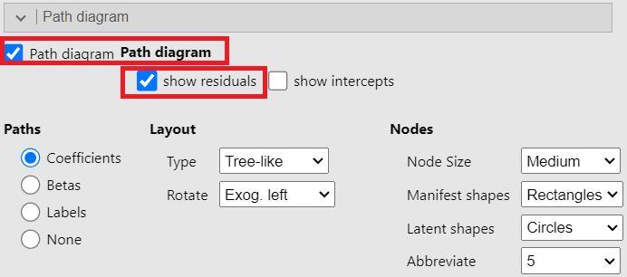
11.7 Output of Jamovi SEM analysis
Path coefficients
The path coefficients of the structural model are shown in the following table:
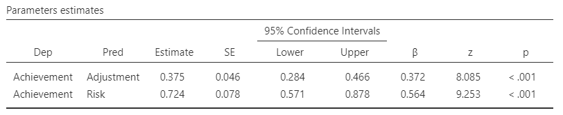
Factor Loadings
The factor Loadings of the measurement model are shown in the following table:
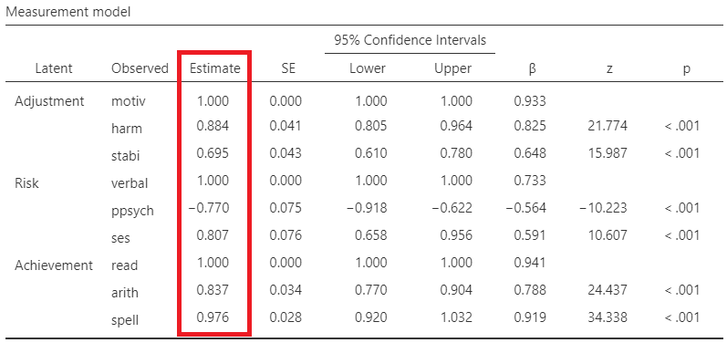
Variances and Covariances
Variances (i.e., measurement errors, variances of the exogenous latent variables, variances of endogenous variables, and covariances between latent variables) are presented in the table Figure 11.12
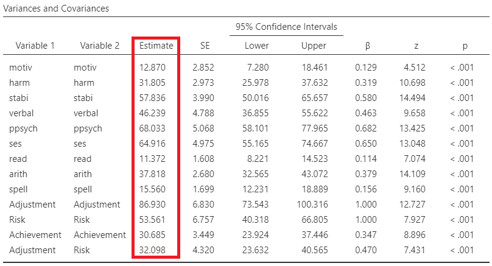
Finally, we can presnt our results of the model with a path diagram as follows:
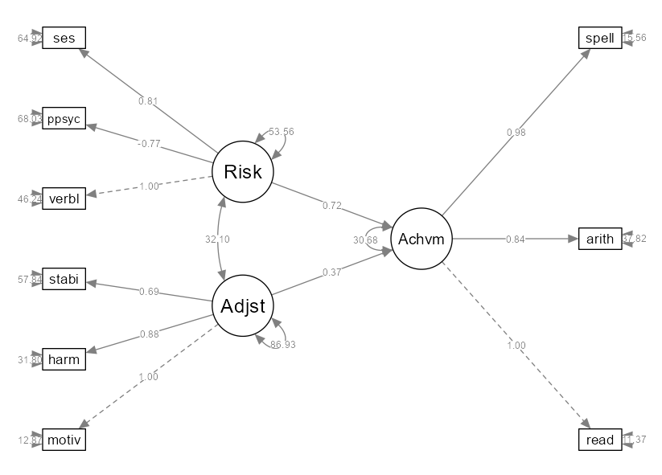